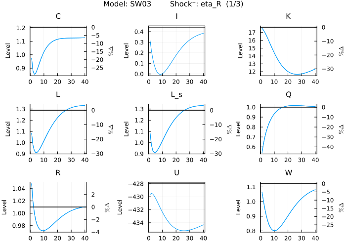
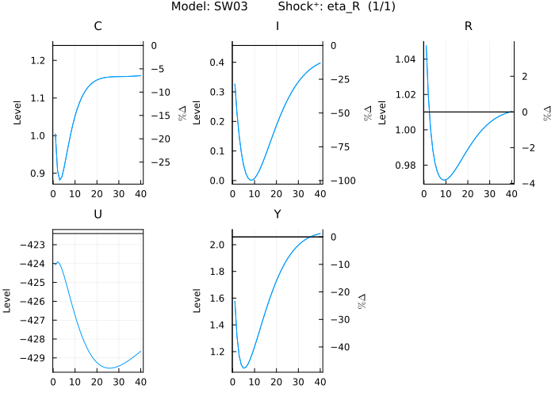
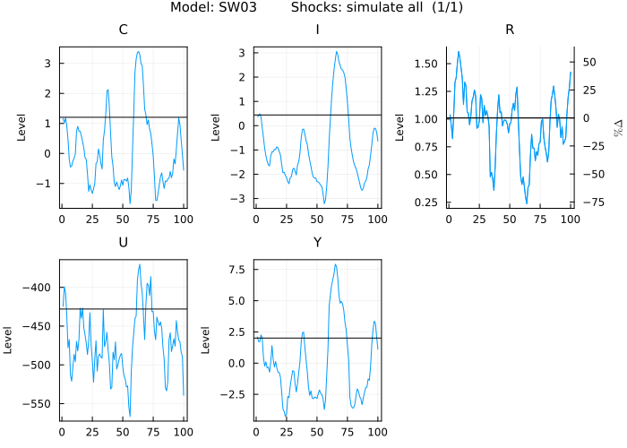
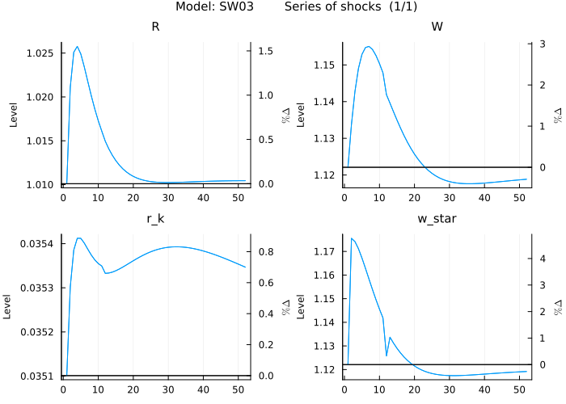
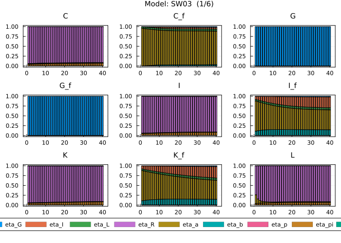
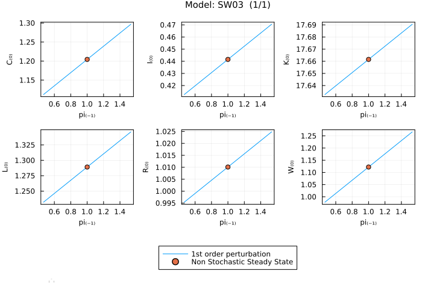
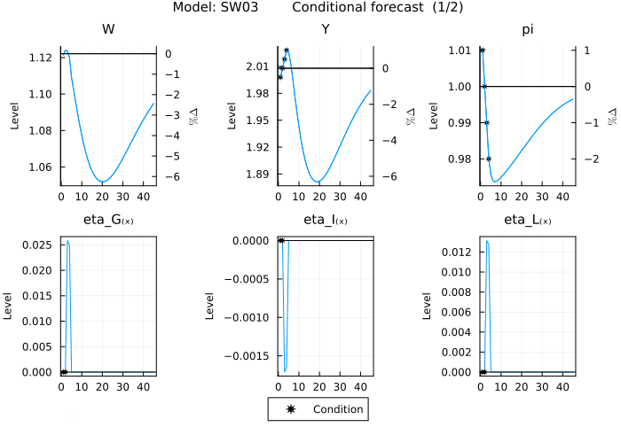
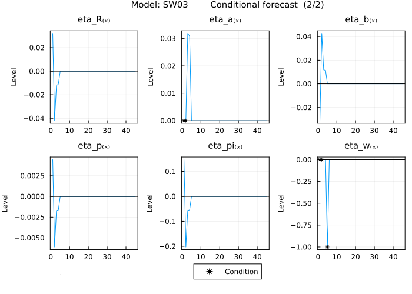

Work with a complex model - Smets and Wouters (2003)
This tutorial is intended to show more advanced features of the package which come into play with more complex models. The tutorial will walk through the same steps as for the simple RBC model but will use the nonlinear Smets and Wouters (2003) model instead. Prior knowledge of DSGE models and their solution in practical terms (e.g. having used a mod file with dynare) is useful in understanding this tutorial.
Define the model
The first step is always to name the model and write down the equations. For the Smets and Wouters (2003) model this would go as follows:
julia> using MacroModellingjulia> @model Smets_Wouters_2003 begin -q[0] + beta * ((1 - tau) * q[1] + epsilon_b[1] * (r_k[1] * z[1] - psi^-1 * r_k[ss] * (-1 + exp(psi * (-1 + z[1])))) * (C[1] - h * C[0])^(-sigma_c)) -q_f[0] + beta * ((1 - tau) * q_f[1] + epsilon_b[1] * (r_k_f[1] * z_f[1] - psi^-1 * r_k_f[ss] * (-1 + exp(psi * (-1 + z_f[1])))) * (C_f[1] - h * C_f[0])^(-sigma_c)) -r_k[0] + alpha * epsilon_a[0] * mc[0] * L[0]^(1 - alpha) * (K[-1] * z[0])^(-1 + alpha) -r_k_f[0] + alpha * epsilon_a[0] * mc_f[0] * L_f[0]^(1 - alpha) * (K_f[-1] * z_f[0])^(-1 + alpha) -G[0] + T[0] -G[0] + G_bar * epsilon_G[0] -G_f[0] + T_f[0] -G_f[0] + G_bar * epsilon_G[0] -L[0] + nu_w[0]^-1 * L_s[0] -L_s_f[0] + L_f[0] * (W_i_f[0] * W_f[0]^-1)^(lambda_w^-1 * (-1 - lambda_w)) L_s_f[0] - L_f[0] L_s_f[0] + lambda_w^-1 * L_f[0] * W_f[0]^-1 * (-1 - lambda_w) * (-W_disutil_f[0] + W_i_f[0]) * (W_i_f[0] * W_f[0]^-1)^(-1 + lambda_w^-1 * (-1 - lambda_w)) Pi_ws_f[0] - L_s_f[0] * (-W_disutil_f[0] + W_i_f[0]) Pi_ps_f[0] - Y_f[0] * (-mc_f[0] + P_j_f[0]) * P_j_f[0]^(-lambda_p^-1 * (1 + lambda_p)) -Q[0] + epsilon_b[0]^-1 * q[0] * (C[0] - h * C[-1])^(sigma_c) -Q_f[0] + epsilon_b[0]^-1 * q_f[0] * (C_f[0] - h * C_f[-1])^(sigma_c) -W[0] + epsilon_a[0] * mc[0] * (1 - alpha) * L[0]^(-alpha) * (K[-1] * z[0])^alpha -W_f[0] + epsilon_a[0] * mc_f[0] * (1 - alpha) * L_f[0]^(-alpha) * (K_f[-1] * z_f[0])^alpha -Y_f[0] + Y_s_f[0] Y_s[0] - nu_p[0] * Y[0] -Y_s_f[0] + Y_f[0] * P_j_f[0]^(-lambda_p^-1 * (1 + lambda_p)) beta * epsilon_b[1] * (C_f[1] - h * C_f[0])^(-sigma_c) - epsilon_b[0] * R_f[0]^-1 * (C_f[0] - h * C_f[-1])^(-sigma_c) beta * epsilon_b[1] * pi[1]^-1 * (C[1] - h * C[0])^(-sigma_c) - epsilon_b[0] * R[0]^-1 * (C[0] - h * C[-1])^(-sigma_c) Y_f[0] * P_j_f[0]^(-lambda_p^-1 * (1 + lambda_p)) - lambda_p^-1 * Y_f[0] * (1 + lambda_p) * (-mc_f[0] + P_j_f[0]) * P_j_f[0]^(-1 - lambda_p^-1 * (1 + lambda_p)) epsilon_b[0] * W_disutil_f[0] * (C_f[0] - h * C_f[-1])^(-sigma_c) - omega * epsilon_b[0] * epsilon_L[0] * L_s_f[0]^sigma_l -1 + xi_p * (pi[0]^-1 * pi[-1]^gamma_p)^(-lambda_p^-1) + (1 - xi_p) * pi_star[0]^(-lambda_p^-1) -1 + (1 - xi_w) * (w_star[0] * W[0]^-1)^(-lambda_w^-1) + xi_w * (W[-1] * W[0]^-1)^(-lambda_w^-1) * (pi[0]^-1 * pi[-1]^gamma_w)^(-lambda_w^-1) -Phi - Y_s[0] + epsilon_a[0] * L[0]^(1 - alpha) * (K[-1] * z[0])^alpha -Phi - Y_f[0] * P_j_f[0]^(-lambda_p^-1 * (1 + lambda_p)) + epsilon_a[0] * L_f[0]^(1 - alpha) * (K_f[-1] * z_f[0])^alpha std_eta_b * eta_b[x] - log(epsilon_b[0]) + rho_b * log(epsilon_b[-1]) -std_eta_L * eta_L[x] - log(epsilon_L[0]) + rho_L * log(epsilon_L[-1]) std_eta_I * eta_I[x] - log(epsilon_I[0]) + rho_I * log(epsilon_I[-1]) std_eta_w * eta_w[x] - f_1[0] + f_2[0] std_eta_a * eta_a[x] - log(epsilon_a[0]) + rho_a * log(epsilon_a[-1]) std_eta_p * eta_p[x] - g_1[0] + g_2[0] * (1 + lambda_p) std_eta_G * eta_G[x] - log(epsilon_G[0]) + rho_G * log(epsilon_G[-1]) -f_1[0] + beta * xi_w * f_1[1] * (w_star[0]^-1 * w_star[1])^(lambda_w^-1) * (pi[1]^-1 * pi[0]^gamma_w)^(-lambda_w^-1) + epsilon_b[0] * w_star[0] * L[0] * (1 + lambda_w)^-1 * (C[0] - h * C[-1])^(-sigma_c) * (w_star[0] * W[0]^-1)^(-lambda_w^-1 * (1 + lambda_w)) -f_2[0] + beta * xi_w * f_2[1] * (w_star[0]^-1 * w_star[1])^(lambda_w^-1 * (1 + lambda_w) * (1 + sigma_l)) * (pi[1]^-1 * pi[0]^gamma_w)^(-lambda_w^-1 * (1 + lambda_w) * (1 + sigma_l)) + omega * epsilon_b[0] * epsilon_L[0] * (L[0] * (w_star[0] * W[0]^-1)^(-lambda_w^-1 * (1 + lambda_w)))^(1 + sigma_l) -g_1[0] + beta * xi_p * pi_star[0] * g_1[1] * pi_star[1]^-1 * (pi[1]^-1 * pi[0]^gamma_p)^(-lambda_p^-1) + epsilon_b[0] * pi_star[0] * Y[0] * (C[0] - h * C[-1])^(-sigma_c) -g_2[0] + beta * xi_p * g_2[1] * (pi[1]^-1 * pi[0]^gamma_p)^(-lambda_p^-1 * (1 + lambda_p)) + epsilon_b[0] * mc[0] * Y[0] * (C[0] - h * C[-1])^(-sigma_c) -nu_w[0] + (1 - xi_w) * (w_star[0] * W[0]^-1)^(-lambda_w^-1 * (1 + lambda_w)) + xi_w * nu_w[-1] * (W[-1] * pi[0]^-1 * W[0]^-1 * pi[-1]^gamma_w)^(-lambda_w^-1 * (1 + lambda_w)) -nu_p[0] + (1 - xi_p) * pi_star[0]^(-lambda_p^-1 * (1 + lambda_p)) + xi_p * nu_p[-1] * (pi[0]^-1 * pi[-1]^gamma_p)^(-lambda_p^-1 * (1 + lambda_p)) -K[0] + K[-1] * (1 - tau) + I[0] * (1 - 0.5 * varphi * (-1 + I[-1]^-1 * epsilon_I[0] * I[0])^2) -K_f[0] + K_f[-1] * (1 - tau) + I_f[0] * (1 - 0.5 * varphi * (-1 + I_f[-1]^-1 * epsilon_I[0] * I_f[0])^2) U[0] - beta * U[1] - epsilon_b[0] * ((1 - sigma_c)^-1 * (C[0] - h * C[-1])^(1 - sigma_c) - omega * epsilon_L[0] * (1 + sigma_l)^-1 * L_s[0]^(1 + sigma_l)) U_f[0] - beta * U_f[1] - epsilon_b[0] * ((1 - sigma_c)^-1 * (C_f[0] - h * C_f[-1])^(1 - sigma_c) - omega * epsilon_L[0] * (1 + sigma_l)^-1 * L_s_f[0]^(1 + sigma_l)) -epsilon_b[0] * (C[0] - h * C[-1])^(-sigma_c) + q[0] * (1 - 0.5 * varphi * (-1 + I[-1]^-1 * epsilon_I[0] * I[0])^2 - varphi * I[-1]^-1 * epsilon_I[0] * I[0] * (-1 + I[-1]^-1 * epsilon_I[0] * I[0])) + beta * varphi * I[0]^-2 * epsilon_I[1] * q[1] * I[1]^2 * (-1 + I[0]^-1 * epsilon_I[1] * I[1]) -epsilon_b[0] * (C_f[0] - h * C_f[-1])^(-sigma_c) + q_f[0] * (1 - 0.5 * varphi * (-1 + I_f[-1]^-1 * epsilon_I[0] * I_f[0])^2 - varphi * I_f[-1]^-1 * epsilon_I[0] * I_f[0] * (-1 + I_f[-1]^-1 * epsilon_I[0] * I_f[0])) + beta * varphi * I_f[0]^-2 * epsilon_I[1] * q_f[1] * I_f[1]^2 * (-1 + I_f[0]^-1 * epsilon_I[1] * I_f[1]) std_eta_pi * eta_pi[x] - log(pi_obj[0]) + rho_pi_bar * log(pi_obj[-1]) + log(calibr_pi_obj) * (1 - rho_pi_bar) -C[0] - I[0] - T[0] + Y[0] - psi^-1 * r_k[ss] * K[-1] * (-1 + exp(psi * (-1 + z[0]))) -calibr_pi + std_eta_R * eta_R[x] - log(R[ss]^-1 * R[0]) + r_Delta_pi * (-log(pi[ss]^-1 * pi[-1]) + log(pi[ss]^-1 * pi[0])) + r_Delta_y * (-log(Y[ss]^-1 * Y[-1]) + log(Y[ss]^-1 * Y[0]) + log(Y_f[ss]^-1 * Y_f[-1]) - log(Y_f[ss]^-1 * Y_f[0])) + rho * log(R[ss]^-1 * R[-1]) + (1 - rho) * (log(pi_obj[0]) + r_pi * (-log(pi_obj[0]) + log(pi[ss]^-1 * pi[-1])) + r_Y * (log(Y[ss]^-1 * Y[0]) - log(Y_f[ss]^-1 * Y_f[0]))) -C_f[0] - I_f[0] + Pi_ws_f[0] - T_f[0] + Y_f[0] + L_s_f[0] * W_disutil_f[0] - L_f[0] * W_f[0] - psi^-1 * r_k_f[ss] * K_f[-1] * (-1 + exp(psi * (-1 + z_f[0]))) epsilon_b[0] * (K[-1] * r_k[0] - r_k[ss] * K[-1] * exp(psi * (-1 + z[0]))) * (C[0] - h * C[-1])^(-sigma_c) epsilon_b[0] * (K_f[-1] * r_k_f[0] - r_k_f[ss] * K_f[-1] * exp(psi * (-1 + z_f[0]))) * (C_f[0] - h * C_f[-1])^(-sigma_c) endModel: Smets_Wouters_2003 Variables Total: 54 Auxiliary: 0 States: 19 Auxiliary: 0 Jumpers: 21 Auxiliary: 0 Shocks: 9 Parameters: 39
First, we load the package and then use the @model macro to define our model. The first argument after @model is the model name and will be the name of the object in the global environment containing all information regarding the model. The second argument to the macro are the equations, which we write down between begin and end. Equations can contain an equality sign or the expression is assumed to equal 0. Equations cannot span multiple lines (unless you wrap the expression in brackets) and the timing of endogenous variables are expressed in the square brackets following the variable name (e.g. [-1] for the past period). Exogenous variables (shocks) are followed by a keyword in square brackets indicating them being exogenous (in this case [x]). In this example there are also variables in the non stochastic steady state denoted by [ss]. Note that names can leverage julia's unicode capabilities (alpha can be written as α).
Define the parameters
Next we need to add the parameters of the model. The macro @parameters takes care of this:
julia> @parameters Smets_Wouters_2003 begin lambda_p = .368 G_bar = .362 lambda_w = 0.5 Phi = .819 alpha = 0.3 beta = 0.99 gamma_w = 0.763 gamma_p = 0.469 h = 0.573 omega = 1 psi = 0.169 r_pi = 1.684 r_Y = 0.099 r_Delta_pi = 0.14 r_Delta_y = 0.159 sigma_c = 1.353 sigma_l = 2.4 tau = 0.025 varphi = 6.771 xi_w = 0.737 xi_p = 0.908 rho = 0.961 rho_b = 0.855 rho_L = 0.889 rho_I = 0.927 rho_a = 0.823 rho_G = 0.949 rho_pi_bar = 0.924 std_eta_b = 0.336 std_eta_L = 3.52 std_eta_I = 0.085 std_eta_a = 0.598 std_eta_w = 0.6853261 std_eta_p = 0.7896512 std_eta_G = 0.325 std_eta_R = 0.081 std_eta_pi = 0.017 calibr_pi_obj | 1 = pi_obj[ss] calibr_pi | pi[ss] = pi_obj[ss] endRemove redundant variables in non stochastic steady state problem: 4.89 seconds Set up non stochastic steady state problem: 1.903 seconds Take symbolic derivatives up to first order: 7.725 seconds Find non stochastic steady state: 47.091 seconds Model: Smets_Wouters_2003 Variables Total: 54 Auxiliary: 0 States: 19 Auxiliary: 0 Jumpers: 21 Auxiliary: 0 Shocks: 9 Parameters: 39 Calibration equations: 2
The block defining the parameters above has two different inputs.
First, there are simple parameter definition the same way you assign values (e.g. Phi = .819).
Second, there are calibration equations where we treat the value of a parameter as unknown (e.g. calibr_pi_obj) and want an additional equation to hold (e.g. 1 = pi_obj[ss]). The additional equation can contain variables in SS or parameters. Putting it together a calibration equation is defined by the unknown parameter, and the calibration equation, separated by | (e.g. calibr_pi_obj | 1 = pi_obj[ss] and also 1 = pi_obj[ss] | calibr_pi_obj).
Note that we have to write one parameter definition per line.
Given the equations and parameters, the package will first attempt to solve the system of nonlinear equations symbolically (including possible calibration equations). If an analytical solution is not possible, numerical solution methods are used to try and solve it. There is no guarantee that a solution can be found, but it is highly likely, given that a solution exists. The problem setup tries to incorporate parts of the structure of the problem, e.g. bounds on variables: if one equation contains log(k) it must be that k > 0. Nonetheless, the user can also provide useful information such as variable bounds or initial guesses. Bounds can be set by adding another expression to the parameter block e.g.: c > 0. Large values are typically a problem for numerical solvers. Therefore, providing a guess for these values will increase the speed of the solver. Guesses can be provided as a Dict after the model name and before the parameter definitions block, e.g.: @parameters Smets_Wouters_2003 guess = Dict(k => 10) begin ... end.
Plot impulse response functions (IRFs)
A useful output to analyze are IRFs for the exogenous shocks. Calling plot_irf (different names for the same function are also supported: plot_irfs, or plot_IRF) will take care of this. Please note that you need to import the StatsPlots packages once before the first plot. In the background the package solves (numerically in this complex case) for the non stochastic steady state (SS) and calculates the first order perturbation solution.
julia> import StatsPlotsjulia> plot_irf(Smets_Wouters_2003)37-element Vector{Any}: Plot{Plots.GRBackend() n=36} Plot{Plots.GRBackend() n=36} Plot{Plots.GRBackend() n=32} Plot{Plots.GRBackend() n=36} Plot{Plots.GRBackend() n=36} Plot{Plots.GRBackend() n=36} Plot{Plots.GRBackend() n=32} Plot{Plots.GRBackend() n=36} Plot{Plots.GRBackend() n=36} Plot{Plots.GRBackend() n=20} ⋮ Plot{Plots.GRBackend() n=34} Plot{Plots.GRBackend() n=36} Plot{Plots.GRBackend() n=16} Plot{Plots.GRBackend() n=34} Plot{Plots.GRBackend() n=36} Plot{Plots.GRBackend() n=20} Plot{Plots.GRBackend() n=34} Plot{Plots.GRBackend() n=36} Plot{Plots.GRBackend() n=16}

When the model is solved the first time (in this case by calling plot_irf), the package breaks down the steady state problem into independent blocks and first attempts to solve them symbolically and if that fails numerically.
The plots show the responses of the endogenous variables to a one standard deviation positive (indicated by Shock⁺ in chart title) unanticipated shock. Therefore there are as many subplots as there are combinations of shocks and endogenous variables (which are impacted by the shock). Plots are composed of up to 9 subplots and the plot title shows the model name followed by the name of the shock and which plot we are seeing out of the plots for this shock (e.g. (1/3) means we see the first out of three plots for this shock). Subplots show the sorted endogenous variables with the left y-axis showing the level of the respective variable and the right y-axis showing the percent deviation from the SS (if variable is strictly positive). The horizontal black line marks the SS.
Explore other parameter values
Playing around with the model can be especially insightful in the early phase of model development. The package tries to facilitate this process to the extent possible. Typically one wants to try different parameter values and see how the IRFs change. This can be done by using the parameters argument of the plot_irf function. We pass a Pair with the Symbol of the parameter (: in front of the parameter name) we want to change and its new value to the parameter argument (e.g. :alpha => 0.305). Furthermore, we want to focus on certain shocks and variables. We select for the example the eta_R shock by passing it as a Symbol to the shocks argument of the plot_irf function. For the variables we choose to plot: U, Y, I, R, and C and achieve that by passing the Vector of Symbols to the variables argument of the plot_irf function:
julia> plot_irf(Smets_Wouters_2003, parameters = :alpha => 0.305, variables = [:U,:Y,:I,:R,:C], shocks = :eta_R)1-element Vector{Any}: Plot{Plots.GRBackend() n=18}

First, the package finds the new steady state, solves the model dynamics around it and saves the new parameters and solution in the model object. Second, note that with the parameters the IRFs changed (e.g. compare the y-axis values for U). Updating the plot for new parameters is significantly faster than calling it the first time. This is because the first call triggers compilations of the model functions, and once compiled the user benefits from the performance of the specialised compiled code. Furthermore, finding the SS from a valid SS as a starting point is faster.
Plot model simulation
Another insightful output is simulations of the model. Here we can use the plot_simulations function. Again we want to only look at a subset of the variables and specify it in the variables argument. Please note that you need to import the StatsPlots packages once before the first plot. To the same effect we can use the plot_irf function and specify in the shocks argument that we want to :simulate the model and set the periods argument to 100.
julia> plot_simulations(Smets_Wouters_2003, variables = [:U,:Y,:I,:R,:C])1-element Vector{Any}: Plot{Plots.GRBackend() n=12}

The plots show the models endogenous variables in response to random draws for all exogenous shocks over 100 periods.
Plot specific series of shocks
Sometimes one has a specific series of shocks in mind and wants to see the corresponding model response of endogenous variables. This can be achieved by passing a Matrix or KeyedArray of the series of shocks to the shocks argument of the plot_irf function. Let's assume there is a positive 1 standard deviation shock to eta_b in period 2 and a negative 1 standard deviation shock to eta_w in period 12. This can be implemented as follows:
julia> using AxisKeysjulia> shock_series = KeyedArray(zeros(2,12), Shocks = [:eta_b, :eta_w], Periods = 1:12)2-dimensional KeyedArray(NamedDimsArray(...)) with keys: ↓ Shocks ∈ 2-element Vector{Symbol} → Periods ∈ 12-element UnitRange{Int64} And data, 2×12 Matrix{Float64}: (1) (2) (3) (4) … (9) (10) (11) (12) (:eta_b) 0.0 0.0 0.0 0.0 0.0 0.0 0.0 0.0 (:eta_w) 0.0 0.0 0.0 0.0 0.0 0.0 0.0 0.0julia> shock_series[1,2] = 11julia> shock_series[2,12] = -1-1julia> plot_irf(Smets_Wouters_2003, shocks = shock_series, variables = [:W,:r_k,:w_star,:R])1-element Vector{Any}: Plot{Plots.GRBackend() n=16}

First, we construct the KeyedArray containing the series of shocks and pass it to the shocks argument. The plot shows the paths of the selected variables for the two shocks hitting the economy in periods 2 and 12 and 40 quarters thereafter.
Model statistics
Steady state
The package solves for the SS automatically and we got an idea of the SS values in the plots. If we want to see the SS values and the derivatives of the SS with respect to the model parameters we can call get_steady_state. The model has 39 parameters and 54 variables. Since we are not interested in all derivatives for all parameters we select a subset. This can be done by passing on a Vector of Symbols of the parameters to the parameter_derivatives argument:
julia> get_steady_state(Smets_Wouters_2003, parameter_derivatives = [:alpha,:beta])2-dimensional KeyedArray(NamedDimsArray(...)) with keys: ↓ Variables_and_calibrated_parameters ∈ 56-element Vector{Symbol} → Steady_state_and_∂steady_state∂parameter ∈ 3-element Vector{Symbol} And data, 56×3 Matrix{Float64}: (:Steady_state) (:alpha) (:beta) (:C) 1.23956 7.19197 14.4994 (:C_f) 1.23956 7.19197 14.4994 (:G) 0.362 6.06522e-16 0.0 (:G_f) 0.362 6.06522e-16 0.0 (:I) 0.456928 3.13855 18.5261 (:I_f) 0.456928 3.13855 18.5261 ⋮ (:r_k) 0.035101 -6.73917e-16 -1.0203 (:r_k_f) 0.035101 5.96703e-16 -1.0203 (:w_star) 1.14353 4.37676 14.5872 (:z) 1.0 0.0 0.0 (:z_f) 1.0 0.0 0.0 (:calibr_pi_obj) 1.0 0.0 0.0 (:calibr_pi) 0.0 0.0 0.0
The first column of the returned matrix shows the SS while the second to last columns show the derivatives of the SS values (indicated in the rows) with respect to the parameters (indicated in the columns). For example, the derivative of C with respect to beta is 14.4994. This means that if we increase beta by 1, C would increase by 14.4994 approximately. Let's see how this plays out by changing beta from 0.99 to 0.991 (a change of +0.001):
julia> get_steady_state(Smets_Wouters_2003, parameter_derivatives = [:alpha,:G_bar], parameters = :beta => .991)2-dimensional KeyedArray(NamedDimsArray(...)) with keys: ↓ Variables_and_calibrated_parameters ∈ 56-element Vector{Symbol} → Steady_state_and_∂steady_state∂parameter ∈ 3-element Vector{Symbol} And data, 56×3 Matrix{Float64}: (:Steady_state) (:G_bar) (:alpha) (:C) 1.25421 -0.47742 7.33193 (:C_f) 1.25421 -0.47742 7.33193 (:G) 0.362 1.0 -6.2389e-16 (:G_f) 0.362 1.0 -6.2389e-16 (:I) 0.47613 0.102174 3.29983 (:I_f) 0.47613 0.102174 3.29983 ⋮ (:r_k) 0.0340817 7.628e-17 -1.21224e-15 (:r_k_f) 0.0340817 -1.93163e-17 3.04609e-16 (:w_star) 1.15842 -1.55142e-15 4.5044 (:z) 1.0 0.0 0.0 (:z_f) 1.0 0.0 0.0 (:calibr_pi_obj) 1.0 0.0 0.0 (:calibr_pi) 0.0 0.0 0.0
Note that get_steady_state like all other get functions has the parameters argument. Hence, whatever output we are looking at we can change the parameters of the model.
The new value of beta changed the SS as expected and C increased by 0.01465. The elasticity (0.01465/0.001) comes close to the partial derivative previously calculated. The derivatives help understanding the effect of parameter changes on the steady state and make for easier navigation of the parameter space.
Standard deviations
Next to the SS we can also show the model implied standard deviations of the model. get_standard_deviation takes care of this. Additionally we will set the parameter values to what they were in the beginning by passing on a Tuple of Pairs containing the Symbols of the parameters to be changed and their new (initial) values (e.g. (:alpha => 0.3, :beta => .99)).
julia> get_standard_deviation(Smets_Wouters_2003, parameter_derivatives = [:alpha,:beta], parameters = (:alpha => 0.3, :beta => .99))2-dimensional KeyedArray(NamedDimsArray(...)) with keys: ↓ Variables ∈ 54-element Vector{Symbol} → Standard_deviation_and_∂standard_deviation∂parameter ∈ 3-element Vector{Symbol} And data, 54×3 Matrix{Float64}: (:Standard_deviation) (:alpha) (:beta) (:C) 2.0521 9.69554 -9.78014 (:C_f) 3.05478 13.0917 -0.834005 (:G) 0.373165 4.2599e-15 -7.66005e-15 (:G_f) 0.373165 3.24272e-14 1.19947e-13 (:I) 3.00453 13.9594 95.911 (:I_f) 3.46854 14.3686 105.856 ⋮ (:q) 4.00515 -33.4496 -162.411 (:q_f) 4.4155 -38.7034 -185.444 (:r_k) 0.0214415 -0.0329408 -0.765379 (:r_k_f) 0.024052 -0.0464338 -0.879571 (:w_star) 1.78357 7.29609 16.3162 (:z) 3.6145 -5.553 -23.9589 (:z_f) 4.05456 -7.82759 -30.4172
The function returns the model implied standard deviations of the model variables and their derivatives with respect to the model parameters. For example, the derivative of the standard deviation of q with resect to alpha is -19.0184. In other words, the standard deviation of q decreases with increasing alpha.
Correlations
Another useful statistic is the model implied correlation of variables. We use get_correlation for this:
julia> get_correlation(Smets_Wouters_2003)2-dimensional KeyedArray(NamedDimsArray(...)) with keys: ↓ Variables ∈ 54-element Vector{Symbol} → 𝑉𝑎𝑟𝑖𝑎𝑏𝑙𝑒𝑠 ∈ 54-element Vector{Symbol} And data, 54×54 Matrix{Float64}: (:C) (:C_f) … (:w_star) (:z) (:z_f) (:C) 1.0 0.780337 0.268043 -0.376451 -0.235315 (:C_f) 0.780337 1.0 -0.270933 -0.360704 -0.0656837 (:G) -0.0527993 -0.0467115 0.0107289 0.0458516 0.0367702 (:G_f) -0.0527993 -0.0467115 0.0107289 0.0458516 0.0367702 (:I) 0.847762 0.589359 … 0.365918 -0.232441 -0.228074 (:I_f) 0.730945 0.807339 -0.222569 -0.316751 -0.152991 ⋮ ⋱ ⋮ (:q) -0.887824 -0.671841 -0.241974 0.666198 0.515866 (:q_f) -0.735122 -0.785457 0.109852 0.648854 0.619623 (:r_k) -0.376451 -0.360704 … 0.0530152 1.0 0.708626 (:r_k_f) -0.235315 -0.0656837 -0.235914 0.708626 1.0 (:w_star) 0.268043 -0.270933 1.0 0.0530152 -0.235914 (:z) -0.376451 -0.360704 0.0530152 1.0 0.708626 (:z_f) -0.235315 -0.0656837 -0.235914 0.708626 1.0
Autocorrelations
Next, we have a look at the model implied aautocorrelations of model variables using the get_autocorrelation function:
julia> get_autocorrelation(Smets_Wouters_2003)2-dimensional KeyedArray(NamedDimsArray(...)) with keys: ↓ Variables ∈ 54-element Vector{Symbol} → Autocorrelation_periods ∈ 5-element UnitRange{Int64} And data, 54×5 Matrix{Float64}: (1) (2) (3) (4) (5) (:C) 0.974847 0.926565 0.870535 0.814803 0.763179 (:C_f) 0.926329 0.816903 0.710851 0.619903 0.54579 (:G) 0.949 0.900601 0.85467 0.811082 0.769717 (:G_f) 0.949 0.900601 0.85467 0.811082 0.769717 (:I) 0.99356 0.977053 0.952851 0.922915 0.888858 (:I_f) 0.988563 0.962684 0.927562 0.886689 0.842531 ⋮ ⋮ (:q) 0.982511 0.966901 0.952778 0.939809 0.927725 (:q_f) 0.978759 0.961856 0.947539 0.934872 0.923296 (:r_k) 0.982643 0.964915 0.946827 0.928418 0.90976 (:r_k_f) 0.987354 0.964983 0.939136 0.912395 0.885865 (:w_star) 0.958378 0.913491 0.865866 0.816377 0.76593 (:z) 0.982643 0.964915 0.946827 0.928418 0.90976 (:z_f) 0.987354 0.964983 0.939136 0.912395 0.885865
Variance decomposition
The model implied contribution of each shock to the variance of the model variables can be calculate by using the get_variance_decomposition function:
julia> get_variance_decomposition(Smets_Wouters_2003)2-dimensional KeyedArray(NamedDimsArray(...)) with keys: ↓ Variables ∈ 54-element Vector{Symbol} → Shocks ∈ 9-element Vector{Symbol} And data, 54×9 Matrix{Float64}: (:eta_G) (:eta_I) … (:eta_pi) (:eta_w) (:C) 0.00393945 0.00120919 0.00114385 3.04469e-7 (:C_f) 0.00271209 0.000559959 0.0 0.0 (:G) 1.0 0.0 0.0 0.0 (:G_f) 1.0 0.0 0.0 0.0 (:I) 0.00281317 0.00430133 … 0.00143853 4.08588e-7 (:I_f) 0.00297832 0.00230662 0.0 0.0 ⋮ ⋱ (:q) 0.00661399 0.00311207 0.00147593 5.46081e-7 (:q_f) 0.00680774 0.00191603 0.0 0.0 (:r_k) 0.00532774 0.0044839 … 0.00144016 1.57736e-6 (:r_k_f) 0.00496212 0.00271529 0.0 0.0 (:w_star) 0.000299473 0.000385553 0.00378742 5.33425e-5 (:z) 0.00532774 0.0044839 0.00144016 1.57736e-6 (:z_f) 0.00496212 0.00271529 0.0 0.0
Conditional variance decomposition
Last but not least, we have look at the model implied contribution of each shock per period to the variance of the model variables (also called forecast error variance decomposition) by using the get_conditional_variance_decomposition function:
julia> get_conditional_variance_decomposition(Smets_Wouters_2003)3-dimensional KeyedArray(NamedDimsArray(...)) with keys: ↓ Variables ∈ 54-element Vector{Symbol} → Shocks ∈ 9-element Vector{Symbol} ◪ Periods ∈ 21-element Vector{Float64} And data, 54×9×21 Array{Float64, 3}: [showing 3 of 21 slices] [:, :, 1] ~ (:, :, 1.0): (:eta_G) (:eta_I) … (:eta_pi) (:eta_w) (:C) 0.00112613 0.000121972 0.000641471 1.13378e-8 (:C_f) 0.000858896 8.75785e-6 0.0 0.0 (:G) 1.0 0.0 0.0 0.0 ⋮ ⋱ (:r_k_f) 0.00247112 2.51971e-5 … 0.0 0.0 (:w_star) 0.000499182 5.21776e-5 0.00154091 0.000651141 (:z) 0.00467774 2.66346e-5 0.000191172 1.41817e-5 (:z_f) 0.00247112 2.51971e-5 0.0 0.0 [:, :, 11] ~ (:, :, 11.0): (:eta_G) (:eta_I) … (:eta_pi) (:eta_w) (:C) 0.00206241 0.000426699 0.000835055 1.18971e-7 (:C_f) 0.00154049 0.000234041 0.0 0.0 (:G) 1.0 0.0 0.0 0.0 ⋮ ⋱ (:r_k_f) 0.00172562 7.81447e-5 … 0.0 0.0 (:w_star) 0.000290106 0.000212217 0.00281349 7.51886e-5 (:z) 0.0045622 0.000147997 0.00200035 8.29763e-6 (:z_f) 0.00172562 7.81447e-5 0.0 0.0 [:, :, 21] ~ (:, :, Inf): (:eta_G) (:eta_I) … (:eta_pi) (:eta_w) (:C) 0.00393945 0.00120919 0.00114385 3.04469e-7 (:C_f) 0.00271209 0.000559959 0.0 0.0 (:G) 1.0 0.0 0.0 0.0 ⋮ ⋱ (:r_k_f) 0.00496212 0.00271529 … 0.0 0.0 (:w_star) 0.000299473 0.000385553 0.00378742 5.33425e-5 (:z) 0.00532774 0.0044839 0.00144016 1.57736e-6 (:z_f) 0.00496212 0.00271529 0.0 0.0
Plot conditional variance decomposition
Especially for the conditional variance decomposition it is convenient to look at a plot instead of the raw numbers. This can be done using the plot_conditional_variance_decomposition function. Please note that you need to import the StatsPlots packages once before the first plot.
julia> plot_conditional_variance_decomposition(Smets_Wouters_2003, variables = [:U,:Y,:I,:R,:C])1-element Vector{Any}: Plot{Plots.GRBackend() n=54}

Model solution
A further insightful output are the policy and transition functions of the the first order perturbation solution. To retrieve the solution we call the function get_solution:
julia> get_solution(Smets_Wouters_2003)2-dimensional KeyedArray(NamedDimsArray(...)) with keys: ↓ Steady_state__States__Shocks ∈ 29-element Vector{Symbol} → Variables ∈ 54-element Vector{Symbol} And data, 29×54 adjoint(::Matrix{Float64}) with eltype Float64: (:C) (:C_f) … (:z) (:z_f) (:Steady_state) 1.20438 1.20438 1.0 1.0 (:C₍₋₁₎) 0.536418 -1.4741e-14 0.214756 -9.35596e-14 (:C_f₍₋₁₎) 0.0163196 0.410787 0.00766973 0.139839 (:I₍₋₁₎) -0.102895 -2.50741e-14 0.317145 -1.11842e-13 (:I_f₍₋₁₎) 0.0447033 -0.24819 … 0.0276803 0.213957 (:K₍₋₁₎) 0.00880026 1.95393e-16 -0.0587166 -4.40804e-15 ⋮ ⋱ ⋮ (:eta_L₍ₓ₎) 0.252424 0.838076 0.0982057 0.430915 (:eta_R₍ₓ₎) -0.229757 3.22259e-16 -0.179716 1.15481e-15 (:eta_a₍ₓ₎) 0.185454 0.699595 … -0.551529 0.348639 (:eta_b₍ₓ₎) 0.087379 0.0150811 0.0338767 -0.013001 (:eta_p₍ₓ₎) -9.72053e-5 -3.62326e-17 -0.00134983 -1.31801e-17 (:eta_pi₍ₓ₎) 0.0100939 4.87354e-17 0.00816804 -1.35362e-16 (:eta_w₍ₓ₎) -4.24362e-5 -8.12211e-18 0.00222469 -2.19996e-18
The solution provides information about how past states and present shocks impact present variables. The first row contains the SS for the variables denoted in the columns. The second to last rows contain the past states, with the time index ₍₋₁₎, and present shocks, with exogenous variables denoted by ₍ₓ₎. For example, the immediate impact of a shock to eta_w on z is 0.00222469.
There is also the possibility to visually inspect the solution using the plot_solution function. Please note that you need to import the StatsPlots packages once before the first plot.
julia> plot_solution(Smets_Wouters_2003, :pi, variables = [:C,:I,:K,:L,:W,:R])1-element Vector{Any}: Plot{Plots.GRBackend() n=15}

The chart shows the first order perturbation solution mapping from the past state pi to the present variables C, I, K, L, W, and R. The state variable covers a range of two standard deviations around the non stochastic steady state and all other states remain in the non stochastic steady state.
Obtain array of IRFs or model simulations
Last but not least the user might want to obtain simulated time series of the model or IRFs without plotting them. For IRFs this is possible by calling get_irf:
julia> get_irf(Smets_Wouters_2003)3-dimensional KeyedArray(NamedDimsArray(...)) with keys: ↓ Variables ∈ 54-element Vector{Symbol} → Periods ∈ 40-element UnitRange{Int64} ◪ Shocks ∈ 9-element Vector{Symbol} And data, 54×40×9 Array{Float64, 3}: [showing 3 of 9 slices] [:, :, 1] ~ (:, :, :eta_G): (1) (2) … (39) (40) (:C) -0.0133742 -0.0204371 -0.011918 -0.0117755 (:C_f) -0.0320112 -0.0407958 -0.0133648 -0.0132136 (:G) 0.11765 0.11165 0.0160956 0.0152748 ⋮ ⋱ ⋮ (:r_k_f) 0.000163701 0.000117874 … 0.00020119 0.000200821 (:w_star) 0.0111119 0.0101598 -0.00225204 -0.00224756 (:z) 0.040404 0.0348715 0.0291886 0.0292194 (:z_f) 0.027596 0.0198707 0.0339156 0.0338535 [:, :, 5] ~ (:, :, :eta_a): (1) (2) … (39) (40) (:C) 0.185454 0.266366 0.0448634 0.0445393 (:C_f) 0.699595 0.807224 0.0641954 0.0635383 (:G) -3.04128e-16 -2.28496e-15 2.89418e-15 2.84967e-15 ⋮ ⋱ ⋮ (:r_k_f) 0.00206815 0.00250599 … -0.0012247 -0.00120755 (:w_star) -0.0685999 -0.0257599 0.0104469 0.00989232 (:z) -0.551529 -0.377876 -0.154075 -0.152389 (:z_f) 0.348639 0.422447 -0.206454 -0.203564 [:, :, 9] ~ (:, :, :eta_w): (1) (2) … (39) (40) (:C) -4.24362e-5 -7.53116e-5 -0.000102464 -0.000101596 (:C_f) -8.12211e-18 5.80867e-18 1.53455e-17 1.35436e-17 (:G) 3.52334e-18 2.10609e-17 4.59549e-19 5.87023e-19 ⋮ ⋱ ⋮ (:r_k_f) -1.30503e-20 1.46515e-18 … 5.34299e-19 5.37046e-19 (:w_star) 0.012691 0.00165858 -8.17445e-5 -7.60783e-5 (:z) 0.00222469 0.00187724 0.000271989 0.000277738 (:z_f) -2.19996e-18 2.45803e-16 9.04684e-17 9.09118e-17
which returns a 3-dimensional KeyedArray with variables (absolute deviations from the relevant steady state by default) in rows, the period in columns, and the shocks as the third dimension.
For simulations this is possible by calling simulate:
julia> simulate(Smets_Wouters_2003)3-dimensional KeyedArray(NamedDimsArray(...)) with keys: ↓ Variables ∈ 54-element Vector{Symbol} → Periods ∈ 40-element UnitRange{Int64} ◪ Shocks ∈ 1-element Vector{Symbol} And data, 54×40×1 Array{Float64, 3}: [:, :, 1] ~ (:, :, :simulate): (1) (2) … (39) (40) (:C) 0.695442 0.974072 2.10345 1.6518 (:C_f) -0.045966 1.39231 -0.257584 -0.861227 (:G) 0.290013 0.241873 0.733128 0.686528 (:G_f) 0.290013 0.241873 0.733128 0.686528 (:I) 0.200022 0.308005 … 1.78491 1.6537 (:I_f) -0.0151198 0.352885 -1.30275 -1.62838 ⋮ ⋱ ⋮ (:q_f) 3.65785 2.06811 5.13559 5.56457 (:r_k) 0.0321346 0.0302931 … 0.0427756 0.0388461 (:r_k_f) 0.0311702 0.0352164 0.0373267 0.0355751 (:w_star) 1.55493 1.02222 4.31651 4.62486 (:z) 0.499936 0.189511 2.29375 1.63133 (:z_f) 0.337367 1.01946 1.3752 1.07993
which returns the simulated data in levels in a 3-dimensional KeyedArray of the same structure as for the IRFs.
Conditional forecasts
Conditional forecasting is a useful tool to incorporate for example forecasts into a model and then add shocks on top.
For example we might be interested in the model dynamics given a path for Y and pi for the first 4 quarters and the next quarter a negative shock to eta_w arrives. Furthermore, we want that the first two periods only a subset of shocks is used to match the conditions on the endogenous variables. This can be implemented using the get_conditional_forecast function and visualised with the plot_conditional_forecast function.
First, we define the conditions on the endogenous variables as deviations from the non stochastic steady state (Y and pi in this case) using a KeyedArray from the AxisKeys package (check get_conditional_forecast for other ways to define the conditions):
julia> using AxisKeysjulia> conditions = KeyedArray(Matrix{Union{Nothing,Float64}}(undef,2,4),Variables = [:Y, :pi], Periods = 1:4)2-dimensional KeyedArray(NamedDimsArray(...)) with keys: ↓ Variables ∈ 2-element Vector{Symbol} → Periods ∈ 4-element UnitRange{Int64} And data, 2×4 Matrix{Union{Nothing, Float64}}: (1) (2) (3) (4) (:Y) nothing nothing nothing nothing (:pi) nothing nothing nothing nothingjulia> conditions[1,1:4] .= [-.01,0,.01,.02];julia> conditions[2,1:4] .= [.01,0,-.01,-.02];
Note that all other endogenous variables not part of the KeyedArray are also not conditioned on.
Next, we define the conditions on the shocks using a Matrix (check get_conditional_forecast for other ways to define the conditions on the shocks):
julia> shocks = Matrix{Union{Nothing,Float64}}(undef,9,5)9×5 Matrix{Union{Nothing, Float64}}: nothing nothing nothing nothing nothing nothing nothing nothing nothing nothing nothing nothing nothing nothing nothing nothing nothing nothing nothing nothing nothing nothing nothing nothing nothing nothing nothing nothing nothing nothing nothing nothing nothing nothing nothing nothing nothing nothing nothing nothing nothing nothing nothing nothing nothingjulia> shocks[[1:3...,5,9],1:2] .= 0;julia> shocks[9,5] = -1;
The above shock Matrix means that for the first two periods shocks 1, 2, 3, 5, and 9 are fixed at zero and in the fifth period there is a negative shock of eta_w (the 9th shock).
Finally we can get the conditional forecast:
julia> get_conditional_forecast(Smets_Wouters_2003, conditions, shocks = shocks, variables = [:Y,:pi,:W], conditions_in_levels = false)2-dimensional KeyedArray(NamedDimsArray(...)) with keys: ↓ Variables_and_shocks ∈ 12-element Vector{Symbol} → Periods ∈ 45-element UnitRange{Int64} And data, 12×45 Matrix{Float64}: (1) (2) … (44) (45) (:W) -0.00477569 -0.00178866 -0.00209378 -0.00154841 (:Y) -0.01 2.77556e-17 0.0028801 0.00269595 (:pi) 0.01 3.46945e-18 -0.000376449 -0.00032659 (:eta_G₍ₓ₎) 0.0 0.0 0.0 0.0 (:eta_I₍ₓ₎) 0.0 0.0 … 0.0 0.0 (:eta_L₍ₓ₎) 0.0 0.0 0.0 0.0 (:eta_R₍ₓ₎) -0.320335 0.41088 0.0 0.0 (:eta_a₍ₓ₎) 0.0 0.0 0.0 0.0 (:eta_b₍ₓ₎) -1.9752 1.99989 0.0 0.0 (:eta_p₍ₓ₎) 0.712388 -0.726688 … 0.0 0.0 (:eta_pi₍ₓ₎) 0.548245 -0.563207 0.0 0.0 (:eta_w₍ₓ₎) 0.0 0.0 0.0 0.0
The function returns a KeyedArray with the values of the endogenous variables and shocks matching the conditions exactly.
We can also plot the conditional forecast. Please note that you need to import the StatsPlots packages once before the first plot.
julia> plot_conditional_forecast(Smets_Wouters_2003,conditions, shocks = shocks, plots_per_page = 6,variables = [:Y,:pi,:W],conditions_in_levels = false)2-element Vector{Any}: Plot{Plots.GRBackend() n=25} Plot{Plots.GRBackend() n=16}


and we need to set conditions_in_levels = false since the conditions are defined in deviations.
Note that the stars indicate the values the model is conditioned on.